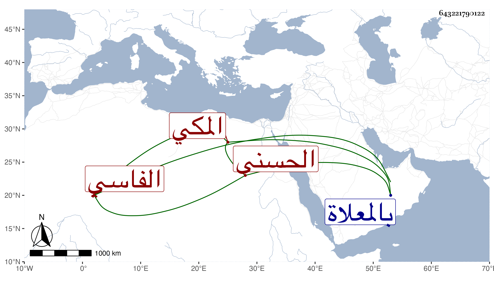

0902Sakhawi.DawLamic.ITO20230111-ara1.EIS1600.643221790122
Biography ID: 643221790122
315
ست الأهل ابنة الشريف محمد بن علي بن أبي عبد الله بن محمد ابن عبد الرحمن الحسنى الفاسي المكي . تزوجها خليل بن عبد الرحمن المالكي فولدت له فاطمة ومات فتزوجها البهاء عبد الرحمن بن النور على النويرى وولدت له وتأيمت بعده حتى ماتت ، وكانت خيرة دينة . ماتت في شعبان سنة سبع وعشرين ودفنت بالمعلاة وقد قاربت السبعين ، ذكرها الفاسي .
